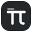

PI DEVE AGENT
参考来源
Pi 提供 Agent 核心。以下项目为桌面交互、工具管理和协作机制提供实现或研究参考。
本产品独立维护。参考来源不表示合作或背书。
原项目名称、商标与版权归各自权利人。分发包含的源码与依赖时，须保留适用许可证和第三方声明；参考项目不共用一个许可证。
本页面提供 15 种语言。软件目前仅支持简体中文与英文。

Pi Deve AgentPI DEVE AGENT
Pi 提供 Agent 核心。以下项目为桌面交互、工具管理和协作机制提供实现或研究参考。
本产品独立维护。参考来源不表示合作或背书。
原项目名称、商标与版权归各自权利人。分发包含的源码与依赖时，须保留适用许可证和第三方声明；参考项目不共用一个许可证。
本页面提供 15 种语言。软件目前仅支持简体中文与英文。